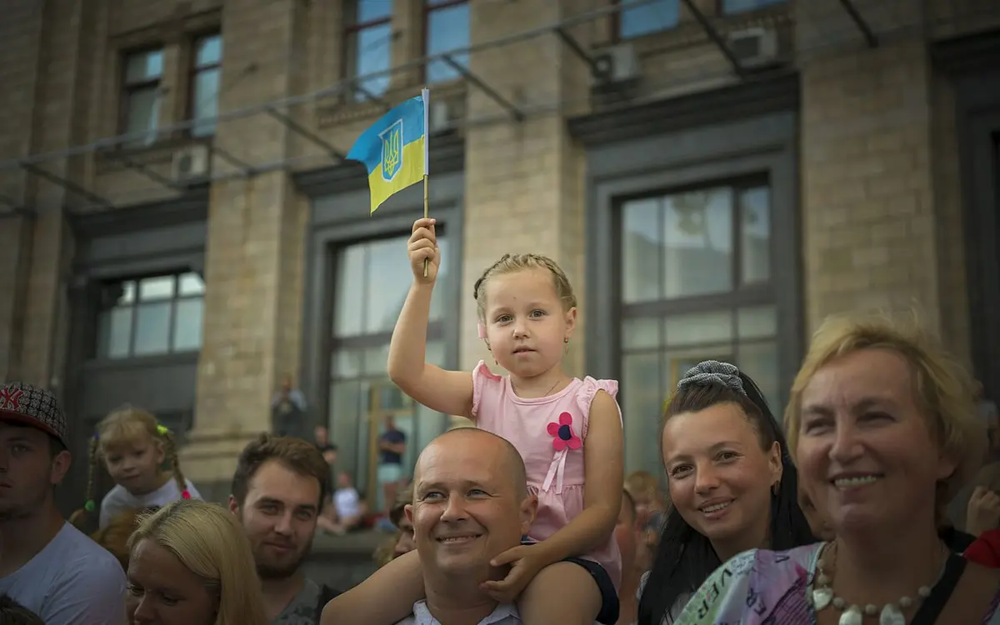

Full article · Medium
ENGin: Rebuilding Ukraine Through 1-on-1 Connections
How ENGin creates one-to-one English-language connections for Ukrainians—and how volunteers can become involved.

From beginner to fluent: how ENGin helps Ukrainians master English
ENGin’s Impact
ENGin is a nonprofit organization which pairs Ukrainian youth with English-speakers for free online conversation practice and cross-cultural connection. ENGin was founded in March 2020 by Kyiv-native Katerina Manoff. She has several years of experience teaching English to foreign learners and managing online ESL programs, as well as constructing English curriculums.
She holds a Master’s Degree in Education from Harvard University, and finds that the work ENGin does may one day equip a generation of young Ukrainians to rebuild the nation.
As of 2022, ENGin has worked alongside upwards of 10,000 students, with 9,500 registered volunteer tutors. According to their website, 93% of students involved significantly improved in English after being matched. With the current ongoing conflict in Ukraine, they help extensively with filling in educational gaps, sharing Ukrainian stories, and preparing to rebuild.
How does ENGin work?
ENGin accepts volunteers 14+ years of age, and Ukrainians from the ages of 10–35. For more information with regard to the specific requirements, you can visit their website, located at https://www.enginprogram.org/englishfaq
For learners, they ask for a minimum time commitment of three months; they state that this is how long it generally takes to see genuine improvement in your English. Volunteers are asked to commit approximately one hour a week for a minimum of twelve weeks — it can be rather difficult to continuously match the same learners with different volunteers.
Interested volunteers can apply here! So long as you are fluent in English (a recommended level of C1-C2), and you are at least 14 years old, you are eligible!
Teaching experience is not required, as their learners have all studied elementary English, and know enough to carry on a basic conversation. You are encouraged to chat informally with your buddies; however, if you are a professional English tutor, they would absolutely love to have your expertise. They have a volunteer mentor program, where you can become a mentee for a more experienced tutor. They check in with you periodically.
On your application form, you can indicate which days of the week work best, and which times would work for you. There are preferences provided for your buddies, including age and gender, and if you feel it is necessary, they will try to match you with someone meeting that criteria.
My Experience With ENGin
I have been volunteering with ENGin since late September of 2022. Currently, I am working with one learner, but I hope to work with more in the near future.
They provide weekly training sessions, videos, materials, session plans, and more, so you never run out of things to talk about! You are encouraged, nonetheless, to consult with your buddy and see what sort of things they are interested in, so you can guide the conversation in a direction accordingly. They also provide themed session plans for various holidays, such as Halloween and Christmas.
I find it very interesting, because with these, I can learn more about Ukrainian traditions as my buddy learns more about mine.
I absolutely adore the work they’re doing, and I look forward to contributing much more in the near future. They also provide leadership opportunities, which I hope to look further into, such as becoming a volunteer mentor, moderating a themed chat, starting an ENGin chapter or club, becoming an ENGin content creator, and more!
If you are interested in learning more, you can contact ENGin directly at info@enginprogram.org. If you are interested in the program, and plan to volunteer or learn in the future, you can join their mailing list, or contact them on social media through their Linktree, which can be found here.
Pictured below are testimonials that can be found on the website:
“Since I was an English learner myself, ENGin resonated the most with me and offered the perfect blend of casual friendships, cultural exchange, and meaningful work.”
Pascale, ENGin Volunteer
“I have volunteered with this organization for about a year and have genuinely loved my experience and I made new friends from around the world and got to learn so much about a different culture. It is perfect for any schedule and is a valuable online volunteering opportunity.”
Isabella, ENGin Volunteer
“Since I joined ENGin, I’ve changed my life. I’ve become more self-assured and actually started improving my English knowledge. Apart from boosting my confidence and English speaking skills, I am learning to communicate with people of different nationalities, opinions, and cultures. English listening skills too, a section Ukrainian students especially struggle with.”
Alexandra, ENGin Student
About this project
See the assignment, process, and Paul’s contribution.
Paul researched and wrote the article independently, drawing on direct volunteer experience with ENGin.
Related work
Continue through the subject.

Designing Digital Museum Exhibits That Visitors Actually Remember
A guide to memorable museum experiences built through play, physical interaction, continuity, and responsive environments.

Sustainable585: Issue #1 — Where Spring Begins
The first Sustainable585 dispatch: a recurring environmental roundup focused on the greater Rochester region.

What Makes a Good Portfolio? (Hint: It’s Not Just the Work)
A strong portfolio shows more than clips: it reveals the structure, context, and judgment behind the finished work.